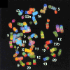
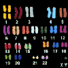

|  |
New Methods for KaryotypingIntroduction: The Spectral Karyotype |  |
A scientific group from the National Center for Human Genome Research in Bethesda, MD has recently published a modification to traditional karyotyping that permits rapid identification of chromosomal alterations. These findings are of import because the ability to detect altered chromosomes is increasingly important for pre- and postnatal diagnostics and in cancer and other diseases.
| The traditional process for karyotyping involves adding a dye to metaphasic chromosomes. Different dyes that affect different areas of the chomosomes are used for a range of identification purposes. One common dye used is Giemsa; That process is known as G-banding (see the G-banded chromosomes in the image to the left). This dye is effective because it markedly stains the bands on a chromosome; Each chromosome can then be identified by its banding pattern, but the resuls is similar overall gray values for each chromosome. |
The new karyotyping methods introduced by Schrock et al use fluorescent dyes that bind to specific regions of chromosomes. By using a series of specific probes each with varying amounts of the dyes, different pairs of chromosomes have unique spectral characteristics. A unique feature of the technology is the use of an interferometer similar to ones used by astronomers for measuring light spectra emitted by stars. Slight variations in color, undetectable by the human eye, are detected by a computer program that then reassigns an easy-to-distinguish color to each pair of chromosomes. The result is a digital image rather than film, in full color. Pairing of the chromosomes is simpler because homologous pairs are the same color, and abberrations and cross-overs are more easily recognizable. In additional, the spectral karyotype has been used to detect translocations not recognizable by traditional banding analysis.
A summary of the spectal karyotyping methods.
The paper:
Multicolor Spectral Karyotyping of Human Chromosomes
SCIENCE 26 Jul 1996; 273 (5274):494
(in Reports)
E. Schröck, S. du Manoir, T. Veldman, B. Schoell, J. Wienberg, M. A. Ferguson-Smith, Y. Ning, D. H. Ledbetter, I. Bar-Am, D. Soenksen, Y. Garini, T. Ried
Editorial:
CYTOGENETICS: New Methods for Expanding the Chromosomal Paint Kit
SCIENCE 26 Jul 1996; 273 (5274):430
(in Research News)


http://www.biology.arizona.edu
All contents copyright © 1996. All rights reserved.